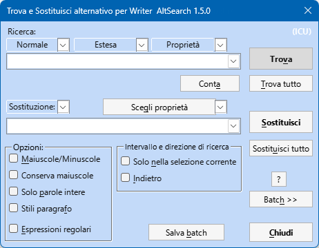
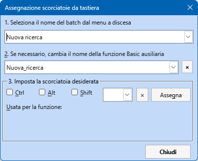
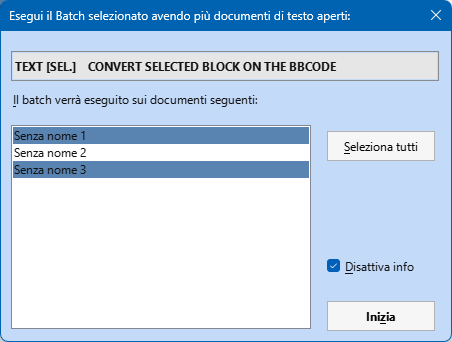

Finestra di dialogo alternativa a Trova e sostituisci di Writer
˳˳˳
Questa versione della guida è stata tradotta in italiano da Leopoldo Saggin aka Topoldo - © 2009-2025
Che cosa offre in più questa estensione rispetto alla finestra di dialogo “Trova e sostituisci” standard di Writer:
- Selezione rapida di espressioni regolari predefinite e/o complesse
- Conteggio del numero di occorrenze delle espressioni trovate usando il pulsante Conta
- Ricerca e/o sostituzione di stringhe contenute in uno o più paragrafi
- Ricerca e/o sostituzione di stringhe contenenti caratteri decimali o esadecimali
- Ricerca di interruzioni manuali di colonna o di pagina; loro eventuale aggiunta o rimozione
- Ricerca di una serie di paragrafi delimitata da due marcatori di testo
- Una volta trovata una stringa di testo, possibilità di espandere o di ridurre la selezione di uno specifico numero di caratteri
- Possibilità di effettuare ricerche e/o sostituzioni multiple in un colpo solo
- Possibilità di condurre ricerche nelle Note, nei Campi di Testo, nei Riferimenti Incrociati e negli Indicatori di Riferimento incrociato sia per contenuto, sia per nome, sia come bersaglio dell’azione degli indicatori; possibilità anche di una loro aggiunta
- Possibilità di effettuare ricerche in Tabelle, Immagini e Cornici di testo in base al loro nome; possibilità di effettuare sostituzioni con qualsiasi testo, contenuto, nome dell’oggetto o contenuto degli Appunti (Clipboard)
- Ricerca e inserimento di Note a piè di pagina e di Note di chiusura. Possibilità di selezionare il testo di tutte le Note a piè di pagina o di tutte le Note di chiusura contemporaneamente, assegnando loro uno stile qualsiasi
- Possibilità di cercare un testo simile o che abbia la stessa formattazione del testo su cui è posizionato il cursore
- Possibilità di sostituire singole sotto-espressioni (fino ad un massimo di 9) all’interno della stringa ricercata mediante il loro inserimento all’interno di parentesi rotonde () e riferendosi ad esse nell’ambito delle stringhe di sostituzione, mediante l’uso dei parametri: \1, \2… fino a \9, nell’ordine
- Possibilità di definire lo stile dei paragrafi, dei caratteri, degli elenchi, nonché le proprietà del testo stesso e l’URL di collegamento ipertestuale (Hyperlink) per effettuare una ricerca e/o sostituzione di testo
- Possibilità di sostituire il testo trovato con il contenuto degli Appunti (Clipboard), il contatore del numero di sostituzioni, il numero di pagina nel quale è stato trovato il testo in questione
- Possibilità di ridirigere i risultati della sostituzione su di un altro file di testo
- Modalità Batch: possibilità di salvare su file e di caricare da quest’ultimo i parametri di ricerca e di sostituzione; possibilità di salvare parecchie operazioni di ricerca e sostituzione in sequenza e di eseguire rapidamente, in un tempo successivo e con un unico comando, l’intero gruppo di operazioni. Possibilità di eseguire la Modalità Batch su più documenti di testo aperti contemporaneamente
- Possibilità di assegnare delle scorciatoie da tastiera alle operazioni batch salvate, usando direttamente la finestra di dialogo AltSearch
- Mantenimento delle maiuscole: se il testo trovato comincia con una lettera maiuscola, anche il testo sostituito inizierà con una lettera maiuscola
- Ricerca per stile di caratteri, possibilità di scegliere uno stile dal menu
- Ricerca per stile di paragrafo o di elenco tramite il menu a discesa ‘Proprietà’
- Ricerca e sostituzione di Segnalibri (Bookmarks)
- Scorciatoie da tastiera: se si usa frequentemente AltSearch, conviene configurare le cosiddette “Scorciatoie da tastiera” utilizzando i seguenti passaggi:
- Aprire la voce di menu Strumenti - Personalizza… - Tastiera
- Nell’ambito del campo Categoria, selezionare Macro dell’applicazione > Macro personali > AltSearch > AltSearch
- Nell’ambito del campo Funzione, conviene selezionare e assegnare le seguenti scorciatoie usando il pulsante Assegna:
- _AltSearch: Ctrl+H > Apre la finestra di ricerca AltSearch
- _FindBack: Ctrl+Shift+L > Trova l’occorrenza precedente della stringa ricercata, prima del punto in cui è attualmente posizionato il cursore, senza la necessità di aprire la finestra di dialogo AltSearch
- _FindNext: Ctrl+L > Trova l’occorrenza successiva della stringa ricercata, dopo il punto in cui è attualmente posizionato il cursore, senza la necessità di aprire la finestra di dialogo AltSearch
ATTENZIONE: Le scorciatoie possono essere assegnare anche dalla finestra di dialogo AltSearch - vedi Modalità Batch

Finestra principale di AltSearch
Menu a discesa sopra la casella per la digitazione della stringa da cercare
I tre menu a discesa posti sopra la casella per la digitazione della stringa da cercare contengono le espressioni regolari complesse o frequentemente usate o altri parametri di ricerca che possono essere automaticamente inseriti nella casella di digitazione dei criteri di ricerca. Dopo avere selezionato una delle opzioni presenti, i relativi parametri vengono trasferiti nella casella di ricerca ed eventualmente anche nella casella di sostituzione, qualora venga specificato anche questo criterio. Le procedure di ricerca/sostituzione possono essere eseguite anche specificando ulteriori opzioni: per es. prima o dopo la posizione del cursore, con sostituzione o meno dell’espressione cercata ecc… Perché ciò sia possibile è in ogni caso necessario che la sottostante casella di controllo “Espressioni regolari” sia contrassegnata.
Ricerca
A. Menu a discesa “[Espressioni] Regolari”
Questo Menu a discesa contiene alcune espressioni regolari molto utili che sono descritte nella Guida di LibreOffice nell’ambito del capitolo intitolato Elenco di Espressioni Regolari
Limitazioni: La sintassi usata nelle espressioni regolari non è totalmente compatibile con quella originale di OOo. Ci sono dei problemi specialmente nelle ricerche che usano i caratteri jolly *, +, ? oppure {n,n} se questi vengono usati subito dopo le sotto-espressioni create utilizzando le parentesi rotonde ().
Per esempio non è possibile trovare l’espressione (Mi)?ster. In ogni caso però, usando il pulsante Conta, viene restituito il numero reale delle occorrenze.
È inoltre possibile cercare delle sotto-espressioni del tipo (.*)any oppure (.+)any, ma in questo caso viene trovata l’occorrenza più corta corrispondente al criterio, contrariamente al sistema di ricerca standard di OOo che invece trova l’occorrenza più lunga. Se è necessario conservare la compatibilità con OOo, si può delimitare l’intera espressione di ricerca con un’ulteriore paio di parentesi: ((Mi)?ster). L’inconveniente di questa soluzione è che non è possibile citare la sotto-espressione nell’ambito dell’espressione di sostituzione; non è cioè possibile usare \# ove # è il numero di riferimento (max. 9) della sotto-espressione. Tanto meno si può usare il riferimento a una sotto-espressione mediante l’uso di parentesi tonde () quando l’espressione regolare è sia il termine di ricerca sia di sostituzione. Per ulteriori infdormazioni si veda Sotto-espressioni.
Altri caratteri jolly:
\l - rappresenta qualsiasi carattere alfabetico; equivale cioè a [:alpha:]{1,1}
\d - rappresenta una cifra decimale; equivale cioè a [0-9]
\p - rappresenta il segno di fine paragrafo
$ - rappresenta un paragrafo vuoto (contrariamente alla ricerca standard di OOo). Assieme a $ è anche possibile usare caratteri jolly quali +, *, oppure {min,max}
\p{1,} - trova la fine del paragrafo successivo seguita da un numero illimitato di paragrafi vuoti. Equivale quindi a \p*
\p{2,4} - trova la fine del paragrafo successivo seguita da almeno uno ma al massimo tre paragrafi vuoti, per un totale complessivo di 2-4 paragrafi, uno dopo l’altro
Limitazioni: La procedura è lenta. Possono sorgere dei problemi nel caso di una ricerca a ritroso.
\xhhhh - abilita la ricerca di un carattere in codifica esadecimale (hhhh)
\#ddddd - abilita la ricerca di un carattere in codifica decimale (ddddd)
Se il carattere successivo non è una cifra, non è necessario conservare tutte 5 le posizioni (ddddd); in caso contrario è necessario riempire le posizioni vuote con degli zero, a partire da sinistra.
\c - rappresenta un’interruzione manuale di colonna
Limitazioni: La procedura è lenta.
\m - rappresenta un’interruzione manuale di pagina
Limitazioni: La procedura è lenta. Se si usa anche la sotto-espressione (), il parametro \m deve trovarsi all’inizio della stringa di ricerca e non deve essere solo. È cioè valida l’espressione \m(…) ma non (…)\m.
\s - rappresenta qualsiasi tipo di spazio: normale, indivisibile, determinato da un carattere di tabulazione o da un’interruzione manuale di riga. Equivale a [\xA0\x9\xA]
\S - rappresenta uno spazio indivisibile (\x00A0 oppure \#160)
B. Menu a discesa “[Ricerca] Estesa”
[::BigBlock::] - cerca una serie di paragrafi (di lunghezza illimitata) delimitato da testo noto:
start[::BigBlock::]end – in questo caso viene dapprima ricercata la stringa start e una volta trovata, viene ricercata la stringa end. Se vengono trovate entrambe, viene selezionato l’intero blocco di testo compreso fra di loro.
Nella stringa di sostituzione si possono usare i parametri \b, ∓, \e per inserire il contenuto di: start, found block of paragraphs, end, rispettivamente.
Limitazioni: Nella stringa iniziale e finale non è consentito l’uso dei segni || per eseguire ricerche e sostituzioni multiple (v. poi)
[::Grow n1,n2::] - il blocco di testo trovato viene espanso di n1 caratteri a sinistra e di n2 caratteri a destra
[::Grow -1,-1::]text - in questo caso, se nel blocco di testo esiste la stringa text, questa verrà trovata, ma saranno selezionati solo i caratteri che si trovano in posizione 2 e 3, cioè: ex.
Limitazioni: è sempre necessario porre [::Grow… all’inizio; l’espressione da ricercare va posizionata dopo. Se n1 o n2 sono valori negativi, la successiva ricerca può determinare l’insorgenza di un circolo vizioso (loop) perché viene trovata sempre la stessa occorrenza della stringa in funzione delle dimensioni e del contenuto dell’espressione ricercata
text1||text2||text3||… - consente un’operazione di ricerca e sostituzione multipla (in un colpo solo)
Per delimitare le ricerche e le sostituzioni parziali, aggiungere il segno || alla fine delle espressioni da ricercare e da sostituire.
Ricerca: text1||text2||text3 - Sostituizione: neco1||neco2||neco3.
In questo caso viene inizialmente cercata la stringa text1 che viene sostituita da neco1. La ricerca prosegue poi con la stringa text2 che viene sostituita da neco2, ecc…
Limitazioni: con || non si possono usare né il parametro [::BigBlock::] né le sotto-espressioni
Ricerca di Oggetti
[::Note::] - cerca le Note di Testo (caselle gialle) a seconda del loro contenuto
[::Note::] - trova la Nota di Testo successiva
[::Note::]pozn. - trova qualsiasi Nota di Testo contenente la sotto-stringa pozn.
Limitazioni: nel contenuto delle note si possono cercare solo sotto-stringhe. Non è invece possibile usare le espressioni regolari standard.
[::Field::] - cerca nei Campi di Testo a seconda del loro contenuto
[::Field::] - trova qualsiasi Campo di Testo normale
[::Field::]obsah - trova quei Campi di Testo del documento in cui è visualizzato il testo obsah
Limitazioni: le stesse di [::Note::] (v. sopra). Inoltre non è possibile trovare campi di tipo speciale (per es. un campo nascosto).
[::TextFrame::] - cerca le Cornici di Testo a seconda del loro nome
[::TextFrame::] - trova qualsiasi Cornice di Testo
[::TextFrame::]rám1 - trova quelle Cornici di Testo che contengono nel loro nome la sotto-stringa rám1.
Limitazioni:
- Utilizzando il pulsante Trova è possibile trovare la successiva cornice di testo solo se essa è selezionata o se il cursore è all’interno della cornice stessa. Se il cursore non si trova all’interno di una cornice, viene trovata la prima cornice di testo in funzione dell’elenco progressivo delle cornici del documento.
N.B.: La casella di controllo “Solo nella selezione corrente” attualmente non funziona.
Come conseguenza del punto precedente, l’utilità pratica del pulsante Sostituzione in questo caso è molto limitata.
- L’ordine di ricerca sfortunatamente corrisponde (si spera solo provvisoriamente) all’ordine con cui le cornici di testo sono state inserite nel corso del tempo nel documento. Non viene cioè rispettato l’ordine “Inizio > Fine” con cui le cornici sono presenti nel documento.
- Nel nome della cornice si possono ricercare solo sotto-stringhe; non è possibile cercare espressioni regolari complete.
I pulsanti Trova tutto e Sostituisci tutto sono pienamente operativi, anche quando sono usati in associazione alla casella di controllo “Solo nella selezione corrente”
[::Picture::] - cerca le Immagini a seconda del loro nome
[::Picture::] - trova qualsiasi immagine
[::Picture::]obr1 - trova le immagini che contengono nel loro nome la sotto-stringa obr1
[::Picture::]\text - trova la sotto-stringa text all’interno del Titolo dell’immagine
[::Picture::]\ - trova le immagini il cui Titolo è assente
Limitazioni: le stesse presenti nel caso di [::TextFrame::] (v. sopra)
[::TextTable::] - cerca le Tabelle a seconda del loro nome
[::TextTable::] - trova qualsiasi Tabella
[::TextTable::]tab1 - trova le Tabelle che contengono nel loro nome la sotto-stringa tab1
Limitazioni: le stesse di [::TextFrame::] (v. sopra)
[::Footnote::] - cerca le Note a piè di pagina (Npp)
[::Footnote::] trova l’àncora di qualsiasi Npp
[::Footnote::]5 trova l’àncora di quelle Npp in cui è presente la sotto-stringa 5
[::Footnote::]\text trova l’àncora di quelle Npp il cui testo contiene la sotto-stringa text. Usando il pulsante Trova tutto verrà selezionato il testo di tutte le Npp che contengono la sotto-stringa text
Usando [::Footnote::]\ e facendo clic sul pulsante Trova tutto verrà selezionato il testo di tutte le Npp: si tratta di un sistema comodo per assegnare uno stile di paragrafo a tutte le Npp in colpo solo
Limitazioni: Funziona solo con versioni 2.3+ di OOo ???
[::Endnote::] - cerca le Note di chiusura
L’uso dei parametri e le limitazioni sono uguali a [::Footnote::] (v. sopra)
[::ReferenceMark::] - cerca i Marcatori di Riferimento Incrociato (IRI) (target marker of cross-references)
[::ReferenceMark::] trova qualsiasi testo configurato come MRI
[::ReferenceMark::]text trova qualsiasi testo configurato come MRI contenente la sotto-stringa text
[::ReferenceMark::]\ref1 trova qualsiasi testo configurato come MRI il cui nome contenga la sotto-stringa ref1
[::ReferenceMark::]\\ trova qualsiasi testo configurato come MRI il cui testo sia vuoto
[::Reference::] - cerca all’interno dei campi di testo definiti come ‛Riferimenti Incrociati’ (cross-reference) per mezzo dei relativi marcatori (markers)
[::Reference::] trova tutti i campi di testo di tipo Riferimento Incrociato
[::Reference::]above trova tutti i Riferimenti Incrociati che contengono la sotto-stringa above
[::Reference::]\ref1 trova tutti i Riferimenti Incrociati il cui nome contiene la sotto-stringa ref1
[::Reference::]\\ trova tutti i Riferimenti Incrociati il cui testo è vuoto
Se Reference viene scelto a partire dal Menu a discesa “[Ricerca] Estesa” e allo stesso tempo il cursore è posizionato nell’ambito di un testo che è un MRI, il corrispondente nome di origine del riferimento incrociato viene aggiunto automaticamente alla casella di digitazione “Ricerca:” ed è quindi possibile effettuare delle ricerche predefinite di tipo più mirato.
[::Bookmark::] - cerca Segnalibri
[::Bookmark::] trova il testo o il blocco di testo contrassegnato come Segnalibro
[::Bookmark::]text trova la sotto-stringa text se questa si trova all’interno di un blocco di testo contrassegnato come Segnalibro
[::Bookmark::]\RefHeading trova il testo o il blocco di testo contrassegnato come Segnalibro solo se il nome del segnalibro contiene la sottostringa RefHeading. Tale sotto-stringa viene cioè cercata solo nel nome del segnalibro.
C. Menu a discesa “Proprietà”
Abilita le ricerche a seconda delle proprietà (attributi) delle stringhe e dei relativi valori.
Nella casella di digitazione bisogna dapprima introdurre [::: e ciò deve essere seguito dal nome della proprietà cercata. Se vi sono più nomi di proprietà, essi possono essere separati con il segno di piping , cioè: |. La proprietà ricercata deve necessariamente terminare con l’inserimento dei caratteri ::]. Dopo di che si possono immettere le specifiche dell’eventuale testo da ricercare. Se invece si cerca il valore della proprietà, bisogna usare una sintassi del tipo: name=value
[:::ParaStyleName::] - ricerca lo stile di un paragrafo
[:::ParaStyleName=::] trova tutti gli interi paragrafi aventi uno stile di paragrafo diverso dallo stile Default (che è quello predefinito).
[:::ParaStyleName=Example::] trova tutti i paragrafi aventi lo stile di paragrafo Example.
[:::ParaStyleName=Example::] something - trova il testo something se questo è formattato con lo stile di paragrafo avente nome Example.
Limitazioni: Non è possibile cercare un testo avente lunghezza zero caratteri, per esempio un paragrafo vuoto. Inoltre non si può combinare la ricerca di questo tipo di proprietà con altre proprietà del testo.
[:::CharStyleName::] - cerca lo stile dei caratteri
[:::CharStyleName=::] - trova quelle parti di testo che hanno lo stile dei caratteri diverso dallo stile Default
[:::CharStyleName=Example::] - trova quelle parti di testo che hanno lo stile dei caratteri Example
[:::CharStyleName=Example::] something - trova il testo something se questo è formattato con lo stile dei caratteri Example.
Limitazioni: Funziona solo dalla posizione corrente del cursore in avanti - L’opzione Indietro non funziona e dà il messaggio: Non trovato.
Non è possibile cercare un testo avente lunghezza zero caratteri, per esempio un paragrafo vuoto. Inoltre non si può combinare la ricerca di questo tipo di proprietà con altre proprietà del testo.
[:::NumberingStyleName::] - cerca lo stile di un elenco - L’uso è simile a quello della ricerca dello stile di paragrafo (v. sopra).
[:::HyperLinkURL::] - cerca un testo avente l’attributo (proprietà) HyperLinkURL
[:::HyperLinkURL::] - trova tutti i testi presenti nel documento aventi proprietà di tipo collegamento ipertestuale (hyperlink)
[:::HyperLinkURL::]link - trova quella parte del collegamento ipertestuale (hyperlink) che contiene il testo link
[:::HyperLinkURL=file:///c:/pokus.odt::] - cerca un collegamento ipertestuale (hyperlink) in cui l’URL è rappresentata dalla sotto-stringa file:///c:/pokus.odt
[:::HyperLinkURL=file:///c:/pokus.odt::]link - cerca parte di un collegamento ipertestuale (hyperlink) in cui l’URL è rappresentata dalla stringa file:///c:/pokus.odt e in cui il testo contiene la stringa link.
L’elenco degli attributi di testo (con i rispettivi valori) utilizzabili per effettuare ricerche nella selezione corrente, può essere caricato usando il pulsante Scegli proprietà: i dati compaiono nel Menu a discesa posto a fianco di tale pulsante. Qui si può trovare una breve descrizione della maggior parte di tali proprietà.
Formato simile dei caratteri - carica qualsiasi proprietà/attribuito del carattere della corrente selezione che sia stato modificata manualmente e cerca in tutto il documento quelle parti che abbiano una formattazione simile. Se, per esempio, il cursore si trova su di un testo che ha subito la modifica manuale del nome del carattere (font), verranno trovate tutte quelle parti del documento in cui è stata effettuata una analoga modifica manuale del nome del carattere. In questo caso per esempio, la casella di ricerca conterrà [:::CharFontName::]
Identico formato dei caratteri - carica qualsiasi proprietà/attribuito del carattere della corrente selezione che sia stato modificato manualmente e cerca in tutto il documento quelle parti che abbiano una identica formattazione. Se, per esempio, il cursore si trova su di un testo che ha subito la modifica manuale del nome del carattere in Arial, verranno trovate tutte quelle parti del documento in cui è stata effettuata una analoga modifica manuale del nome del carattere e che abbiano anche lo stesso nome del carattere. Pertanto, in questo caso ad esempio, la casella di ricerca conterrà [:::CharFontName=Arial::].
Limitazioni: Il motore di ricerca di OOo non supporta tutte le possibili proprietà di paragrafo e di carattere. Inoltre non tutte le combinazioni funzionano come ci si potrebbe aspettare.
Sostituzione
Menu a discesa “Sostituzione”
& \0 - entrambi questi parametri hanno lo stesso significato: nella sostituzione rappresentano l’intero testo trovato
Se l’espressione è stata trovata usando [::BigBlock::], questi parametri rappresentano solo la serie di paragrafi compresa fra il marcatore di inizio e di fine serie.
Se l’oggetto era stato trovato usando [::Note::], [::Field::], [::TextFrame::], [::Picture::] o [::TextTable::], questi parametri rappresentano esattamente tale oggetto e viene inserito tramite gli Appunti (Clipboard)
\b \e - Se l’espressione è stata trovata usando [::BigBlock::], questi parametri rappresentano il contenuto dei marcatori di inizio e di fine blocco.
Limitazioni: questi parametri non possono essere usati insieme alle sotto-espressioni.
\1 \2 \3 \4 \5 \6 \7 \8 \9 - rappresentano il possibile contenuto delle sotto-espressioni
Se l’espressione viene ricercata utilizzando le parentesi rotonde (), \1 rappresenta il contenuto della prima coppia di parentesi, \2 corrisponde al contenuto del secondo paio di parentesi ecc…, fino a \9 che corrisponde al contenuto del nono paio. Il tutto è valido solo per il primo livello di parentesi; parentesi nidificate su più livelli vengono ignorate.
Esempio:
Usando l’espressione (\d{1,2})\. *(\d{1,2})\. *\d{2,2}(\d{2,2}) è possibile trovare le date che hanno formato 01. 12. 2007 (gg.mm.aaaa); usando l’espressione di sostituzione \3-\2-\1 esse vengono sostituite con date nel formato 07-12-01 (aa-mm-gg).
Se è necessario impedire la processazione delle sotto-espressioni (per esempio per conservare la compatibilità con le espressioni regolari standard di OOo), bisogna porre l’intera espressione di ricerca all’interno di una coppia addizionale di parentesi rotonde. In tal modo tutti i livelli nidificati di parentesi di sostituzione saranno ignorati.
Limitazioni: La processazione delle sotto-espressioni è relativamente lenta e non completamente compatibile con le funzioni di ricerca originariamente previste in OOo.
C’è anche una incompatibilità nell’uso dei caratteri jolly posti immediatamente dopo una sotto-espressione - ad esempio nel caso di (opak)* - dovuta al principio della ricerca sequenziale in blocchi di testo. Per maggiori informazioni si veda qui. Tuttavia le funzioni Conta e Trova tutto consentono di ricavare il numero corretto di occorrenze anche in questa situazione, mentre le altre funzioni non sono in grado di trovare alcunché (a meno che non si passi alla modalità compatibile con OOo). Nei casi più complicati è necessario esaminare attentamente ciò che avviene: infatti solo sperimentando si potranno ottenere i migliori risultati
\p - inserisce un paragrafo vuoto
\t - inserisce un carattere di tabulazione (\x0009 \#9)
\s - inserisce uno spazio indivisibile (\x00A0 \#160)
\n - inserisce una interruzione manuale di riga (\x000A \#10)
\c - inserisce una interruzione manuale di colonna prima del paragrafo trovato
\m - inserisce una interruzione manuale di pagina prima del testo trovato
\M - inserisce una interruzione manuale di pagina dopo il paragrafo trovato
\r - rimuove le interruzioni manuali di colonna o di pagina nel paragrafo trovato
\xhhhh - inserisce un carattere usando la codifica esadecimale simboleggiata da hhhh
\#ddddd - inserisce un carattere usando la codifica decimale simboleggiata da ddddd
\h{addressURL} - modifica il testo trovato in un collegamento ipertestuale (hyperlink) avente come URL addressURL
\h{}, \h - modificano il testo trovato in un collegamento ipertestuale (hyperlink) avente per URL una stringa vuota. Hanno lo scopo di eliminare la URL del collegamento ipertestuale (hyperlink) mantenendo il testo del collegamento ipertestuale (hyperlink) inalterato.
\H{substr} - sostituisce la sotto-stringa nell’URL del collegamento ipertestuale (hyperlink). Deve essere usata contemporaneamente ad un criterio di ricerca del tipo: [:::HyperLinkURL=::]. Se, per esempio, l’espressione cercata è del tipo [:::HyperLinkURL=substr::], verranno trovati solo quei collegamenti ipertestuali (hyperlink) la cui URL include la sotto-stringa substr. Associando il parametro \H{repl}, il testo substr verrà sostituito dal testo repl.
\u - se viene trovato un collegamento ipertestuale (hyperlink), inserisce nell’espressione di sostituzione l’indirizzo dell’URL del testo trovato
\P{Text} - applica lo stile paragrafo Text al(i) paragrafo(i) trovato(i).
Lo stile viene applicato al paragrafo che contiene il testo dell’espressione di sostituzione. Per applicare lo stile “Default” bisogna usare \P oppure \P{}. Se questo parametro viene usato più volte, lo stile verrà modificato secondo le specifiche indicate da ogni nuovo parametro e resterà valido fino alla fine del paragrafo. Per esempio, una espressione di sostituzione del tipo block1\P{Subtitle}\p block2\P{Heading 1} inserisce il paragrafo block1 cui assegna lo stile Subtitle. Successivamente viene inserito un nuovo paragrafo avente contenuto block2 cui viene assegnato lo stile Heading 1.
\C{Citazione} - al testo trovato applica lo stile carattere Citazione.
Lo stile viene applicato all’intero testo dell’espressione di sostituzione. Se si vuole applicare lo stile “Default” bisogna usare \C o \C{}. Se questo parametro viene usato più volte, lo stile del carattere verrà modificato ad ogni variazione di questo parametro e l’ultimo stile applicato rimarrà valido fino alla fine dell’espressione di sostituzione. Per esempio: nel caso di una espressione di sostituzione del tipo block1\C{Citazione}block2\C{Example}, a block1 verrà assegnato lo stile carattere Citazione mentre a block2 verrà invece assegnato lo stile carattere Example.
\N{Elenco 3} - applica lo stile elenco Elenco 3 al(i) paragrafo(i) trovato(i)
Vengono applicate regole d’uso analoghe a quelle del parametro \P{}. Lo stile elenco può essere rimosso con \N o \N{}
\D - applica la formattazione predefinita al testo trovato, esattamente come quando si usa la combinazione di tasti Ctrl+Maiusc+Barra Spaziatrice. Vengono applicate regole d’uso analoghe a quelle del parametro \C{}
\d - ripristina gli attributi del testo ai valori predefiniti solo laddove viene utilizzato. Infatti, contrariamente a \D non ha effetto sul testo inserito in precedenza.
\F{New footnote} - dove avviene la sostituzione inserisce una nuova Nota a piè di pagina che contiene il testo New footnote e all’interno delle parentesi graffe è possibile usare un qualsiasi parametro del tipo: \i, \I, ∓ o \1.
\E{New endnote} - dove avviene la sostituzione inserisce una Nota di chiusura analogamente a \F e all’interno delle parentesi graffe è possibile usare un qualsiasi parametro del tipo: \i, \I, ∓, o \1.
\L{0,0,ref1} - inserisce un campo di riferimento incrociato con i parametri 0,0 e con marcatore (marker) di riferimento ref1
Significato dei parametri numerici
- Primo numero (= tipo di riferimento incrociato):
- - Numero di pagina in formato numerico di tipo arabo
- - Numero del capitolo
- - Testo del riferimento incrociato
- - Sopra/sotto
- - Numero di pagina con formato numerico definito dallo stile della pagina
- - Categoria e numero della didascalia
- - Testo della didascalia
- - Campo di sequenza numerica personalizzata (didascalia)???
- Secondo numero (= tipo di origine del campo di riferimento). L’origine può essere:
- - Un marcatore di riferimento
- - Un campo di sequenza numerica personalizzata ???
- - Un segnalibro
- - Una nota a piè di pagina
- - Una nota di chiusura
\K{w, bookmark_name} - inserisce il segnalibro avente nome bookmark_name.
Il primo parametro rappresenta la modalità dell’àncora
w - segnalibro dell’intero blocco di testo selezionato
b - segnalibro ancorato all’inizio del blocco di testo
e - segnalibro ancorato alla fine del blocco di testo
\K{}, \K - rimuovono il segnalibro se presente nel blocco di testo selezionato. Rimuovono solo il segnalibro; il blocco di testo rimane!
\K{w, new_name}\K - rinomina il segnalibro. Il segalibro deve essere stato trovato utilizzando [::Bookmark::] o deve essere già presente
\o - inserisce il contenuto di testo dell’oggetto trovato. Se l’espressione è stata cercata con: [::Note::], [::Footnote::], [::Endnote::], [::TextFrame::], [::Picture::], o [::TextTable::] verrà inserito il testo all’interno dell’oggetto. In particolare, nel caso delle tabelle vengono inseriti dei caratteri di tabulazione tra le colonne e dei segni di paragrafo tra le righe.
Se l’espressione è stata cercata con: [::Field::], [::Reference::] o [::ReferenceMark::], verrà inserito il campo o il testo visualizzato dell’àncora.
Limitazioni: La massima dimensione del testo derivante dalla conversione di una tabella è di 64 kB.
\O - inserisce il nome dell’oggetto trovato
Se l’espressione è stata cercata con:
- [::TextFrame::], [::Picture::] o [::TextTable::] verrà inserito il nome dell’oggetto relativo
- [::Note::] o [::Field::] verrà inserito il tipo di campo di testo
- [::Reference::] o [::ReferenceMark::] verrà inserito il nome del marcatore (marker) di riferimento incrociato
- [::Footnote::] o [::Endnote::] verrà inserito il testo visualizzato dell’àncora
\i - inserisce, il numero di occorrenze dell’oggetto trovato o il conteggio delle occorrenze del testo. Quest’ultima modalità funziona solo se si usa il pulsante Sostituisci tutto
\i{start,digit} - contatore formattato. Per esempio: \i{9,4} conta a partire da 9 con 4 cifre (009, 0010, 0011 ecc…)
\I - inserisce il numero di pagina in cui è stata trovata l’espressione cercata.
Se si usa la ridirezione dell’espressione di sostituzione su un altro file mediante il parametro (\R) (v. sotto), in tale file viene inserito il numero di pagina che contiene la posizione iniziale del testo trovato.
Limitazioni: non funziona correttamente nelle note a piè di pagina, nelle intestazioni e nei piè di pagina.
\v - inserisce il contenuto degli Appunti (Clipboard)
\V - inserisce il contenuto degli Appunti (Clipboard) come testo semplice (non formattato)
\f - mantiene il formato
Se nell’espressione di sostituzione si usano i parametri ∓ oppure \0, la sostituzione avviene mediante l’uso degli Appunti (Clipboard). Se il testo trovato contiene campi di testo, note, riferimenti ecc…, questi saranno conservati nel loro stato originale.
\R - ridirige l’espressione di sostituzione su un altro file di testo.
Questa opzione comporta l’inserimento dell’espressione di sostituzione nel file new.odt invece della sostituzione del testo trovato nel file originario. Quest’ultimo rimane tal quale, senza alcuna modifica. Per assegnare il nome del nuovo file su cui viene ridiretta l’espressione di sostituzione, va usato il parametro \R{filename}. Il nome del file deve avere un formato identico a quello dell’intestazione della finestra di OOo ed è obbligatorio che sia seguito dalla stringa: “- OpenOffice.org Writer“. Eventuali salvataggi successivi che utilizzino questa ridirezione vengono sempre aggiunti in coda al file.
Esempio: Se l’espressione cercata è del tipo: [:::HyperLinkURL::] e l’espressione di sostituzione è Link \i, page \I: & (URL: \u)\p\R, quando si fa clic sul pulsante Sostituisci tutto tutti i collegamenti ipertestuali (hyperlink) trovati nel file originale verranno riporetati in un nuovo file nella forma:
>Link1, page 1: textOfHyperlink (URL: URLaddress)
Menu a discesa “Scegli proprietà”
Il menu a discesa Scegli proprietà consente di aggiornare l’elenco delle proprietà e dei valori dell’oggetto attualmente selezionato. Si può quindi scorrere tale elenco e scegliereuna proprietà.
\A{properties=value} - imposta il valore della proprietà specificata nell’espressione di sostituzione
. Utilizza regole analoghe a quelle del parametro \C{} (v. sopra).Modalità Batch

Finestra della modalità Batch
La modalità Batch che si attiva facendo clic sul pulsante Batch >> abilita il salvataggio e il caricamento di parametri di ricerca e di sostituzione predefiniti. È anche possibile salvare parecchie operazioni di ricerca e di sostituzione in sequenza in un unico file per caricare ed eseguire l’intero gruppo di operazioni in un tempo successivo.
Mediante il pulsante Salva il batch è possibile definire tutti i parametri: compare una finestra di dialogo che propone in modo predefinito il nome utilizzato per l’ultimo batch e che, comunque, è sempre possibile modificare. Se si tratta del primo salvataggio invece, compare la scritta “Nuova ricerca”. Se a un batch si assegna un nome già esistente, si può scegliere se si vuole che il vecchio contenuto venga sovrascritto dal nuovo o se invece lo si vuole conservare aggiungendo il nuovo contenuto in coda al vecchio. Assieme alla procedura batch viene automaticamente salvato anche il comando “ReplaceAll” con cui la procedura batch verrà successivamente eseguita. Anche questo comando può essere modificato, intervenendo manualmente sul file delle regole del batch.
Facendo clic sul pulsante Batch >> compare la finestra di dialogo ’Gestione batch’ che consente la modifica o l’esecuzione di procedure batch. Per tornare alla finestra di dialogo Ricerca e sostituzione di AltSearch bisogna fare clic sul pulsante << Ricerca.
Tutti i parametri delle procedure batch vengono salvati nel file di testo AltSearchScript.txt che in Microsoft Windows® si trova in: %APPDATA%\LibreOffice\4\user\config\
Il file può essere aperto e modificato usando il pulsante Modifica della finestra di dialogo Gestione batch. Per operare le modifiche al testo in Microsoft Windows® viene richiamato in maniera predefinita il programma Blocco Note (Notepad.exe). È possibile scegliere qualsiasi altro editor modificando il file AltSearchEditor.ini presente nella stessa directory di AltSearchScript.txt. Dopo avere modificato manualmente e salvato il file di batch con Gestione batch, si può aggiornare l’elenco dei nomi dei file batch usando il pulsante Aggiorna.
La sintassi utilizzata nel file AltSearchScript.txt è descritta all’inizio di tale file che utilizza la codifica UTF-8.
Quando si clicca due volte su un elemento dell’elenco delle procedure batch o quando si clicca sul pulsante Esegui, la sequenza scelta viene caricata e vengono eseguite le relative operazioni di ricerca e sostituzione. Se si usano delle procedure batch su delle selezioni di testo è consigliabile lasciare 1-2 paragrafi vuoti all’inizio e alla fine della selezione.
Il pulsante Trasferisci viene usato per trasferire i parametri di ricerca e di sostituzione e le relative definizioni nella finestra di dialogo, senza che vengano eseguiti. Se però la procedura batch è costituita da una sequenza di numerose ricerche e sostituzioni, verrà trasferita solo l’ultima parte della sequenza.Scorciatoie da tastiera
Facendo clic sul pulsante Scorciatoie presente nella finestra di Gestione batch si apre una finestra di dialogo che consente di assegnare delle scorciatoie da tastiera alle procedure batch esistenti.

Finestra di assegnazione delle scorciatoie da tastiera
Per usare tale pulsante bisogna:
- Selezionare il nome della procedura batch dalla casella di menu a discesa
- Se richiesto, cambiare il nome della funzione ausiliaria in Basic
- Impostare la combinazione di tasti desiderata
- Premere il pulsante Assegna
Perché la scorciatoia funzioni, all’atto della sua creazione viene contemporaneamente creata anche una funzione ausiliaria nel modulo Basic denominata Standard.AltSearchBatchs il cui nome, adattato alla sintassi del Basic, viene visualizzato nella seconda casella di menu a discesa della finestra di dialogo. Quando viene lanciata questa procedura ausiliaria, si apre la finestra di dialogo AltSearch e viene immediatamente eseguita la procedura batch specificata. Il funzionamento corretto dipende dalla conformità dei nomi di batch elencati all’interno della procedura e dal nome dei batch esistenti. Se si modifica il nome del batch al quale era stata precedentemente assegnata una scorciatoia, è ovviamente necessario che essa venga riassegnata. La vecchia procedura ausiliaria può essere cancellata selezionandola nella seconda casella di menu a discesa facendo clic sul pulsante x posto a fianco diessa. Qualsiasi scorciatoia da tastiera definita in Writer può essere resa disponibile e riassegnata utilizzando il pulsante x posizionato più sotto. Pertanto si faccia molta attenzione a non rimuovere inavvertitamente delle scorciatoie importanti!
Esecuzione multipla

Esecuzone multipla
Un batch file selezionato nella finestra di dialogo Gestione Batch può essere applicato contemporaneamente a parecchi file di testo che però debbono essere aperti.
Per far questo bisogna:
- Selezionare Batch nella finestra di dialogo Gestione Batch
- Fare clic sul pulsante Esecuzione multipla
- Selezionare dall’elenco i file da utilizzare in tale processo. Per effettuare la selezione usare il tasto CTRL + clic sul pulsante sinistro del mouse
ATTENZIONE: La lista presenta solo i file di tipo Writer che in quel momento sono aperti - Premere il pulsante Avvia per iniziare l’esecuzione
ATTENZIONE: durante l’esecuzione della procedura, NON fare nulla in Writer!
La selezione della casella “Disattiva info” impedisce la visualizzazione dei messaggi che mostrano le modifiche eseguite per ogni file processato. In questo caso, al termine di tutta la procedura, verrà comunque mostrato un rapporto completo delle modifiche effettuate a carico di tutti i file.
Limitazioni:
Qualora siano note delle limitazioni di AltSearch, esse sono menzionate assieme alla descrizione dei parametri individuali interessati.
Limitazioni di carattere generale sono le seguenti:
- Se è attiva l’opzione “Solo nella selezione corrente” non è possibile fare ricerche di testo all’interno di cornici o di tabelle anche se poste all’interno di blocchi di testo selezionati. La ricerca all’interno dei blocchi è limitata solamente all’area del blocco selezionato e non è supportata la selezione multipla del blocco di testo selezionato.
- La funzione “Trova tutto” non è in grado di selezionare il marcatore di paragrafo \p perché per la selezione viene usata la proprietà “Sfondo carattere (Evidenziato)” e non è possibile usarla per evidenziare un marcatore di paragrafo. Ne consegue anche che la funzione “Trova tutto” si limita a quei testi che non usano l’evidenziazione. Quando si usa l’opzione “Trova tutto”, se il documento contiene delle evidenziazioni, appare una finestra di avvertimento.
- Nella sostituzione delle espressioni più complesse, la funzione “Annulla” (Undo) viene frammentata in più operazioni di sostituzione parziale, così che può facilmente accadere che il numero di operazioni “Annulla” necessarie per ripristinare il documento allo stato originale non corrisponda al numero atteso di operazioni.